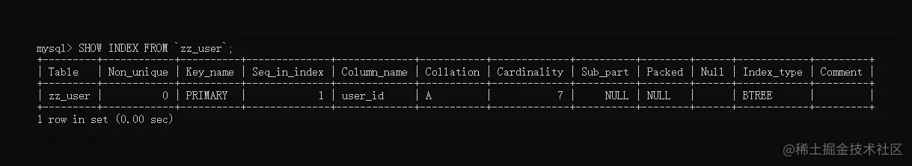
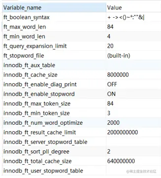

索引初识:索引机制、分类、使用与管理
(四)MySQL之索引初识篇：索引机制、索引分类、索引使用与管理综述
引言
由于MySQL是作为存储层部署在业务系统的最后端，所有的业务数据最终都要入库落盘，但随着一个项目在线上运行的时间越来越久，数据库中的数据量自然会越来越多，而数据体积出现增长后，当需要从表查询一些数据时，效率会越发低下。在正常情况下，表的查询性能和数据量是成反比的，也就是数据越多，查询越慢。
这是什么原因导致的呢？由于
MySQL默认的查询方式导致的，举个例子~
|
|
上面给出了一张学生表，其中有七位学生信息，而此时要查询姓名为「脑斧」的学生信息时，MySQL底层是如何检索数据的呢？会触发磁盘IO，对表中的数据进行逐条读取并判断，也就是说，在这里想要查找到符合要求的数据，至少要经过六次磁盘IO才能检索到目标（暂且先不考虑局部性读取原理与随机IO）。
- 那假设这个表中有
1000W条数据呢？要查的目标数据位于表的900W行以后怎么办？岂不是要触发几百万次磁盘IO才能检索到数据啊，如果真的这样去干，其效率大家可想而知。
在这种情况下，又该如何去提升数据库的查询性能呢？因为查询往往都是一个业务系统中最频繁的操作，一般项目的写/读请求比例都遵循三七定律，也就是
30%的请求会涉及到写库操作，另外70%则属于查库类型的操作。
在思考如何提升查询性能前，咱们不妨先回想一下小时候的场景，小时候由于刚接触汉字，很多字都不认识，所以通常每个人小时候都会拥有一本「新华字典」，但一本字典那么厚，我们是一页页去翻的吗？并不是，字典中有目录索引，我们可以根据音节、偏旁等方式查找不认识的字。 在「新华字典」中一页页翻找某个汉字，就类似于我们前面给出的全表扫描方式，效率特别特别低，而通过目录索引则能够在很短的时间内找到目标汉字。
既然字典中都存在目录索引页，能帮助小时候的我们快速检索汉字，那这个思想能否应用到数据库中来呢？答案是当然可以，并且MySQL也提供了索引机制，索引是数据库中的核心组件之一，一张表中建立了合适的索引后，往往在面对海量数据查询时，能够事半功倍，接下来一起聊一聊MySQL的索引。
索引机制会分为上、中、下三篇进行阐述，大致内容如下： 《上篇：索引初识篇》主要讲解索引的概述、分类、使用与管理等； 《中篇：索引应用篇》主要阐述索引优劣分析、建立索引的原则、索引失效的场景、如何正确的使用索引、索引优化机制等； 《下篇：索引原理篇》则主要讲述索引的底层实现、
B+Tree、Hash数据结构、聚簇索引和非聚簇索引实现、索引查询原理、索引管理实现等；
一、MySQL索引机制概述
对于MySQL索引机制的作用，经过上述「新华字典」的案例后可得知：索引就是用来帮助表快速检索目标数据的。此时先来简单回顾一下MySQL中索引是如何使用的呢？首先需要创建索引，MySQL可以通过CREATE、ALTER、DDL三种方式创建一个索引。
1.1、MySQL索引的创建方式
- ①使用
CREATE语句创建
|
|
这种创建方式可以给一张已存在的表结构添加索引，其中需要指定几个值：
indexName：当前创建的索引，创建成功后叫啥名字。tableName：要在哪张表上创建一个索引，这里指定表名。columnName：要为表中的哪个字段创建索引，这里指定字段名。length：如果字段存储的值过长，选用值的前多少个字符创建索引。ASC|DESC：指定索引的排序方式，ASC是升序，DESC是降序，默认ASC。
当然，上述语句中的INDEX也可更改为KEY，作用都是创建一个普通索引，而对于其他的索引类型，这点在后续的索引分类中再聊。
- ②使用
ALTER语句创建
|
|
这里的参数都相同，所以不再重复赘述。
- ③建表时
DDL语句中创建
|
|
这种方式就比较适合在库表设计时，已经确定了索引项的情况下建立。
1.2、查询、删除、指定索引
但不管通过哪种方式建立索引，本质上创建的索引都是相同的，当索引创建完成后，可通过SHOW INDEX FROM tableName;这条命令查询一个表中拥有的索引，如下：
|
|
在上述的建表SQL中，为user_id创建了一个主键索引，然后来查一下当前表的索引信息：

简单的概述一下查询后，每个字段的含义：
- ①
Table：当前索引属于那张表。 - ②
Non_unique：目前索引是否属于唯一索引，0代表是的，1代表不是。 - ③
Key_name：当前索引的名字。 - ④
Seq_in_index：如果当前是联合索引，目前字段在联合索引中排第几个。 - ⑤
Column_name：当前索引是位于哪个字段上建立的。 - ⑥
Collation：字段值以什么方式存储在索引中，A表示有序存储，NULL表无序。 - ⑦
Cardinality：当前索引的散列程度，也就是索引中存储了多少个不同的值。 - ⑧
Sub_part：当前索引使用了字段值的多少个字符建立，NULL表示全部。 - ⑨
Packed：表示索引在存储字段值时，以什么方式压缩，NULL表示未压缩， - ⑩
Null：当前作为索引字段的值中，是否存在NULL值，YES表示存在。 - ⑪
Index_type：当前索引的结构（BTREE, FULLTEXT, HASH, RTREE）。 - ⑫
Comment：创建索引时，是否对索引有备注信息。
这条命令在后续排除问题、性能调优时，会有不小的作用，比如可以通过分析其中的Cardinality字段值，如果该值少于数据的实际行数，那目前索引有可能失效（对于这些后续排查篇和SQL优化篇再聊）。
OK~，到这里了解了一下索引相关的创建、查询命令，接着再看看删除、强制使用命令。
在MySQL中并未提供修改索引的命令，也就说当你建错了索引，只能先删再重新建立一次，删除索引的语句如下：
|
|
当然，当建立了一条索引后，也可以强制性的为SELECT语句指定索引，如下：
|
|
FORCE INDEX关键字可以为一条查询语句强制指定走哪个索引查询，但要牢记的是：如果当前的查询SQL压根不会走指定的索引字段，哪这种方式是行不通的，这个关键字的用法是：一条查询语句在有多个索引可以检索数据时，显式指定一个索引，减少优化器选择索引的耗时。
但要注意：如果你对于你整个业务系统十分熟悉，那可以这样干。但如果不熟悉的话，还是交给优化器来自行选择，否则会适得其反！
1.3、数据库索引的本质
前面一直在聊创建、查看、删除、指定等一些索引的基本操作，但索引本质上在数据库中是什么呢？大家都知道，数据库是基于磁盘工作的，所有的数据都会放到磁盘上存储，而索引也是数据的一种，因此与表数据相同，最终创建出的索引也会在磁盘生成本地文件。
不过索引文件在磁盘中究竟以何种方式存储，这是由索引的数据结构来决定的。同时，由于索引机制最终是由存储引擎实现，因此不同存储引擎下的索引文件，其保存在本地的格式也并不相同。
在这里有一个点需要注意：建立索引的工作在表数据越少时越好，如果你想要给一张百万、千万条数据级别的表新创建一个索引，那创建的耗时也不短，这是为什么呢？
因为刚刚聊过，索引本质上和表是一样的，都是磁盘中的文件，那也就代表着创建一个索引，并不像单纯的给一张表加个约束那么简单，而是会基于原有的表数据，重新在磁盘中创建新的本地索引文件。假设表中有一千万条数据，那创建索引时，就需要将索引字段上的1000W个值全部拷贝到本地索引文件中，同时做好排序并与表数据产生映射关系。
OK~，至此就对
MySQL提供的索引机制做了简单回顾，下面再来说说数据库中“多样化”的索引类型。
二、MySQL的索引分类
在前面我为什么用多样化去形容数据库索引呢？因为确实如此，先列一些大家都听说过的索引称呼：聚簇索引、非聚簇索引、唯一索引、主键索引、联合索引、全文索引、单列索引、多列索引、复合索引、普通索引、二级索引、辅助索引、次级索引、有序索引、B+Tree索引、R-Tree索引、T-Tree索引、Hash索引、空间索引、前缀索引……
是不是看的眼花缭乱，这些都是
MySQL中索引的一些称呼，一通看下来，估计大家看“索引”两个字都有点不认识了^_^
但实际上MySQL中真的有这么多索引类型吗？其实并没有，上述列出的索引称呼中，有几个称呼对应的索引是同一个，有一部分只是逻辑上的索引，那索引究竟该如何分类呢？其实从不同的层面上来说，可以将索引划分为不同的类型，接下来重点聊一聊。
2.1、数据结构层次
前面聊索引本质的时候提到过，索引建立后也会在磁盘生成索引文件，那每个具体的索引节点该如何在本地文件中存放呢？这点是由索引的数据结构来决定的。比如索引的底层结构是数组，那所有的索引节点都会以Node1→Node2→Node3→Node4....这样的形式，存储在磁盘同一块物理空间中，不过MySQL的索引不支持数组结构，或者说数组结构不适合作为索引结构，MySQL索引支持的数据结构如下：
B+Tree类型：MySQL中最常用的索引结构，大部分引擎支持，有序。Hash类型：大部分存储引擎都支持，字段值不重复的情况下查询最快，无序。R-Tree类型：MyISAM引擎支持，也就是空间索引的默认结构类型。T-Tree类型：NDB-Cluster引擎支持，主要用于MySQL-Cluster服务中。
在上述的几种索引结构中，B+树和哈希索引是最常见的索引结构，几乎大部分存储引擎都实现了，对于后续两种索引结构在某些情况下也较为常见，但除开列出的几种索引结构外，MySQL索引支持的数据结构还有R+、R*、QR、SS、X树等结构。
但为何后续的一些索引结构大家没听说过呢？这是因为索引到底支持什么数据结构，这是由存储引擎决定的，不同的存储引擎支持的索引结构也并不同，目前较为常用的引擎就是
MyISAM、InnoDB，因此大家未曾听说后面列出的这些索引结构也是正常的。
当然，也正因为索引结构由存储引擎决定，而MySQL引擎层在《MySQL架构篇》中提到过，属于可拔插式引擎，所以如果你有能力自己实现一个引擎，那你甚至可以让引擎的索引机制支持任何数据结构。
在
MySQL中创建索引时，其默认的数据结构就为B+Tree，如何更换索引的数据结构呢？如下：
|
|
也就是在创建索引时，通过USING关键字显示指定索引的数据结构（必须要为当前引擎支持的结构）。
同时索引会被分为有序索引和无序索引，这是指索引文件中存储索引节点时，会不会按照字段值去排序。那一个索引到底是有序还是无序，就是依据数据结构决定的，例如B+Tree、R-Tree等树结构都是有序，而哈希结构则是无序的。
2.2、字段数量层次
前面从索引的数据结构层次出发，可以将索引分为不同结构的类型，而从表字段的层次来看，索引又可以分为单列索引和多列索引，这两个称呼也比较好理解，单列索引是指索引是基于一个字段建立的，多列索引则是指由多个字段组合建立的索引。
单列索引也会分为很多类型，比如：
- 唯一索引：指索引中的索引节点值不允许重复，一般配合唯一约束使用。
- 主键索引：主键索引是一种特殊的唯一索引，和普通唯一索引的区别在于不允许有空值。
- 普通索引：通过
KEY、INDEX关键字创建的索引就是这个类型，没啥限制，单纯的可以让查询快一点。 - …..还有很多很多，只要是基于单个字段建立的索引都可以被称为单列索引。
多列索引的概念前面解释过了，不过它也有很多种叫法，例如：
- 组合索引、联合索引、复合索引、多值索引….
但不管名称咋变，描述的含义都是相同的，即由多个字段组合建立的索引。
不过在使用多列索引时要注意：当建立多列索引后，一条
SELECT语句，只有当查询条件中了包含了多列索引的第一个字段时，才能使用多列索引，下面举个栗子。
比如在用户表中，通过id、name、age三个字段建立一个多列索引，什么情况下会使用索引，什么时候不会呢？如下：
|
|
OK，到这里就根据字段数量的层面出发，简单讲明了单列和多列索引的概念，但无论是单列还是多列，都可以存在一个前缀索引的概念，啥叫前缀索引呢？还记得创建索引时指定的length字段吗？
length：如果字段存储的值过长，选用值的前多少个字符创建索引。
使用一个字段值中的前N个字符创建出的索引，就可以被称为前缀索引，前缀索引能够在很大程度上，节省索引文件的存储空间，也能很大程度上提升索引的性能，这是为什么呢？后面分析索引实现原理的时候细聊。
2.3、功能逻辑层次
相信大家在面试时，如果问到了MySQL索引机制，相信一定会问如下这道面试题：
请回答一下你知道的
MySQL索引类型。
这题的答案该怎么回答呢？其实主要就是指MySQL索引从逻辑上可以分为那些类型，以功能逻辑划分索引类型，这也是最常见的划分方式，从这个维度来看主要可划分为五种：
- 普通索引、唯一索引、主键索引、全文索引、空间索引
对于普通索引、唯一索引、主键索引都介绍过了，就不再过多阐述，但稍微提一嘴，在主键字段上建立的索引被称为主键索引，非主键字段上建立的索引一般被称为辅助索引或、二级索引或次级索引，接着重点聊一下全文索引和空间索引。
全文索引和空间索引都是MySQL5.7版本后开始支持的索引类型，不过这两种索引都只有MyISAM引擎支持，其他引擎要么我没用过，要么就由于自身实现的原因不支持，例如InnoDB。对于全文索引而言，其实在MySQL5.6版本中就有了，但当时并不支持汉字检索，到了5.7.6版本的时候才内嵌ngram全文解析器，才支持亚洲语种的分词，同时InnoDB引擎也开始支持全文索引，在5.7版本之前，只有MyISAM引擎支持。
全文索引
全文索引类似于ES、Solr搜索中间件中的分词器，或者说和之前常用的like+%模糊查询很类似，它只能创建在CHAR、VARCHAR、TEXT等这些文本类型字段上，而且使用全文索引查询时，条件字符数量必须大于3才生效。当然，还是举个栗子才有感觉：
|
|
比如现在用户想要搜索一篇文章，但是忘记文章全称了，只记得「诞生至结束」这个词汇，此时用户搜索这个词汇，走全文索引的情况下，照样能够定位到上表中的第二条记录。
当然，全文索引如何创建与使用，待会儿后面一起列出来。
空间索引
空间索引这玩意儿其实用的不多，至少大部分项目的业务中不会用到，想要弄清楚空间索引，那么首先得知道一个概念：GIS空间数据，GIS是什么意思呢？是地理信息系统，这是一门新的学科，基于了计算机、信息学、地理学等多科构建的，主要就是用于管理地理信息的数据结构，在国土、规划、出行、配送、地图等和地理有关的项目中，应用较为频繁。
地理空间数据主要包含矢量数据、3D模型、影像文件、坐标数据等，说简单点，空间数据也就是可以将地理信息以模型的方式，在地图上标注出来。在MySQL中总共支持GEOMETRY、POINT、LINESTRING、POLYGON四种空间数据类型，而空间索引则是基于这些类型的字段建立的，也就是可以帮助我们快捷检索空间数据。
不过对于空间索引，一般用的较少，大家了解即可。
2.4、存储方式层次
上面聊完了三种不同层次的索引划分后，接着从存储方式的层面再聊聊，从存储方式来看，MySQL的索引主要可分为两大类：
- 聚簇索引：也被称为聚集索引、簇类索引
- 非聚簇索引：也叫非聚集索引、非簇类索引、二级索引、辅助索引、次级索引
重点说一说这两类索引存储方式的区别，在说之前先回忆一下数组和链表的区别：
- 数组是物理空间上的连续，存储的所有元素都会按序存放在同一块内存区域中。
- 链表是逻辑上的连续，存储的所有元素可能不在同一块内存，元素之间以指针连接。
为啥要说这个呢？因为聚簇索引和非聚簇索引的区别也大致是相同的：
- 聚簇索引：逻辑上连续且物理空间上的连续。
- 非聚簇索引：逻辑上的连续，物理空间上不连续。
当然，这里的连续和数组不同，因为索引大部分都是使用B+Tree结构存储，所以在磁盘中数据是以树结构存放的，所以连续并不是指索引节点，而是指索引数据和表数据，也就是说聚簇索引中，索引数据和表数据在磁盘中的位置是一起的，而非聚簇索引则是分开的，索引节点和表数据之间，用物理地址的方式维护两者的联系。
不过一张表中只能存在一个聚簇索引，一般都会选用主键作为聚簇索引，其他字段上建立的索引都属于非聚簇索引，或者称之为辅助索引、次级索引。但也不要走进一个误区，虽然MySQL默认会使用主键上建立的索引作为聚簇索引，但也可以指定其他字段上的索引为聚簇索引，一般聚簇索引要求索引必须是非空唯一索引才行。
其实就算表中没有定义主键，
InnoDB中会选择一个唯一的非空索引作为聚簇索引，但如果非空唯一索引也不存在，InnoDB隐式定义一个主键来作为聚簇索引。
当然，主键或者说聚簇索引，一般适合采用带有自增性的顺序值。
对于聚簇、非聚簇索引的区别、两者的查找过程、隐式主键、为何主键适合自增值等这些问题，在后续的《索引原理篇》中会详细讲解。
2.5、索引分类小结
至此，对于MySQL“多样化”的索引机制，一大堆索引名词，就已经梳理清楚啦！相信到这里为止，大家也对MySQL的索引机制有了系统化的认知，其实最开始给出的一大堆索引名词，只是从不同角度划分出来的，在上述中分别从数据结构、字段数量、功能逻辑以及存储方式多个层面进行了描述。当然，要牢记的是，以功能逻辑的层次来划分索引，这也是最常用的方式。
三、MySQL其他索引的创建使用方式
前面的案例中，聊到了咱们有三种方式创建索引，在创建时可通过INDEX、KEY两个关键字创建，但这种方式建立的索引仅是普通索引，接着再来聊一聊MySQL数据库其他类型的索引该如何创建以及使用。
但不管是何种类型的索引，都可以通过前面聊到的三种方式创建。
3.1、唯一索引的创建与使用
唯一索引在创建时，需要通过UNIQUE关键字创建：如下：
|
|
在已有的表基础上创建唯一索引时要注意，如果选用的字段，表中字段的值存在相同值时，这时唯一索引是无法创建的，比如：
|
|
比如上述文章表中，第4、5条数据是重复的，此时创建利用SQL语句创建唯一索引，就会抛出1062错误码：
|
|
在这种情况下，就只能先删除重复数据，然后才能创建唯一索引成功。
同时，当唯一索引创建成功后，它同时会对表具备唯一约束的作用，当再使用INSERT语句插入相同值时，会同样会抛出1062错误码：
|
|
这里会提示你插入的哪个值，已经在表中存在，因此无法插入当前这条数据。
3.2、主键索引的创建与使用
前面聊到过，主键索引其实是一种特殊的唯一索引，但主键索引却并不是通过UNIQUE关键字创建的，而是通过PRIMARY关键字创建：
|
|
在这里要注意：
- 创建主键索引时，必须要将索引字段先设为主键，否则会抛
1068错误码。 - 这里也不能使用
CREATE语句创建索引，否则会提示1064语法错误。 - 同时创建索引时，关键字要换成
KEY，并非INDEX，否则也会提示语法错误。
还是以之前的文章表为例，如下：
|
|
当然，一般主键索引都会在建表的DDL语句中创建，不会在表已经建立后再创建。
但似乎无论在讲普通索引，还是唯一索引、主键索引的时候，我们都没有讲如何使用这些创建好的索引查询数据，其实这一点无需咱们考虑，参考之前《SQL执行篇》中查询语句的执行流程，在一条SELECT语句来到MySQL时，会经历优化器优化的过程，而优化器则会自动帮咱们选择一个最合适的索引查询数据。当然，前提是查询条件中涉及到了索引字段才行。
前面也说过，你不想让优化器自动选择，也可以手动通过
FORCE INDEX关键字强制指定。
3.3、全文索引的创建与使用
全文索引和其他索引不同，首先如果你想要创建全文索引，那么MySQL版本必须要在5.7及以上，同时使用时也需要手动指定，一起来先看看如何创建全文索引，此时需要使用FULLTEXT关键字：
|
|
不过在创建全文索引时，有三个注意点：
5.6版本的MySQL中，存储引擎必须为MyISAM才能创建。- 创建全文索引的字段，其类型必须要为
CHAR、VARCHAR、TEXT等文本类型。 - 如果想要创建出的全文索引支持中文，需要在最后指定解析器：
with parser ngram。
此时还依旧是以文章表为例，为文章名称字段创建一个全文索引，命令如下：
|
|
创建好全文索引后，当你想要使用全文索引时，优化器这时不能自动选择，因为全文索引有自己的语法，但在了解如何使用之前，得先清楚两个概念：最小搜索长度和最大搜索长度，先来看看全文索引的一些参数，可通过show variables like '%ft%';命令查询，如下：

多余的参数就不介绍了，重点讲一下其中的几个重要参数：
ft_min_word_len：使用MyISAM引擎的表中，全文索引最小搜索长度。ft_max_word_len：使用MyISAM引擎的表中，全文索引最大搜索长度。ft_query_expansion_limit：MyISAM中使用with query expansion搜索的最大匹配数。innodb_ft_min_token_size：InnoDB引擎的表中，全文索引最小搜索长度。innodb_ft_max_token_size：InnoDB引擎的表中，全文索引最大搜索长度。
那么究竟做最小搜索长度、最大搜索长度的作用是什么呢？其实这个是一个限制，对于长度小于最小搜索长度和大于最大搜索长度的词语，都无法触发全文索引。也就是说，如果想要使用全文索引对一个词语进行搜索，那这个词语的长度必须在这两个值之间。
其实这两个值自己可以手动调整的，最小值可以手动调整为
1，MyISAM引擎的最大值可以调整为3600，但InnoDB引擎最大似乎就是84。
OK~，了解全文索引中的一些概念后，接下来看看如何使用全文索引，全文索引中有两个专门用于检索的关键字，即MATCH(column)、AGAINST(关键字)，同时这两个检索函数也支持三种搜索模式：
- 自然语言模式(默认搜索模式)
- 布尔搜索模式
- 查询拓展搜索
MATCH()主要是负责指定要搜索的列，这里要指定创建全文索引的字段，AGAINST()则指定要搜索的关键字，也就是要搜索的词语，接下来简单的讲一下三种搜索模式。
自然语言模式
这种模式也是在使用全文索引时，默认的搜索模式，使用方法如下：
|
|
一眼看过去，SQL就能看懂，毕竟都可以排版了一下SQL，不过多介绍了。唯一要注意的是，如果给定的关键词长度小于默认的最小搜索长度，那是无法使用全文索引的，比如下述这条SQL就不会触发：
|
|
布尔搜索模式
布尔搜索模式有些特殊，因为在这种搜索模式中，还需要掌握特定的搜索语法：
-
+：表示必须匹配的行数据必须要包含相应关键字。 -
-：和上面的+相反，表示匹配的数据不能包含相应的关键字。 -
>：提升指定关键字的相关性，在查询结果中靠前显示。 -
<：降低指定关键字的相关性，在查询结果中靠后显示。 -
~：表示允许出现指定关键字，但出现时相关性为负。 -
*：表示以该关键字开头的词语，如A*，可以匹配A、AB、ABC.... -
""：双引号中的关键字作为整体，检索时不允许再分词。 -
1"X Y"@n：
1""包含的多个词语之间的距离必须要在
1n之间，单位-字节，如：
竹子 熊猫@10：表示竹子和熊猫两个词语之间的距离要在10字节内。
-
…….
举个几个例子使用一下，如下：
|
|
同样的，上述的SQL语句应该都能看明白，最后的IN BOOLEAN MODE表示使用布尔搜索模式，除此外，大家唯一疑惑的就在于：相关性这个词，其实这个词也不难理解，就是检索数据后，数据的优先级顺序，当相关性越高，对应数据在结果中越靠前，当相关性为负，则相应的数据排到最后。
查询拓展搜索
查询拓展搜索其实是对自然语言搜索模式的拓展，比如举个例子：
|
|
在自然语言模式的查询语句基础上，最后面多加一个WITH QUERY EXPANSION表示使用查询拓展搜索，这种模式下会比自然语言模式多一次检索过程，比如上述的例子中：
- 首先会根据指定的关键字
MySQL进行一次全文检索。 - 然后第二阶段还会对指定的关键进行分词，然后再进行一次全文检索。
之前介绍全文索引参数时，也列出来了一个名为ft_query_expansion_limit的参数，这个参数就是控制拓展搜索时的拓展行数的，最大可以调整到1000。但由于Query Expansion的全文检索可能带来许多非相关性的查询结果，因此在实际情况中要慎用！！！
实际上，全文索引引入
MySQL后，可以用它代替之前的like%模糊查询，效率会更高。
3.4、空间索引的创建与使用
空间索引这玩意儿实际上很多项目不会用到，我用的次数也不多，但如果你要用到这个索引，那可以通过SPATIAL关键字创建，如下：
|
|
但在创建空间索引的时候，有几个注意点需要牢记：
- 目前
MySQL常用引擎中，仅有MyISAM支持空间索引，所以表引擎必须要为它。 - 空间索引必须要建立在类型为
GEOMETRY、POINT、LINESTRING、POLYGON的字段上。
这个用的较少，就不展开细聊了~
3.5、联合索引的创建与使用
联合索引呢，实际上并不是一种逻辑索引分类，它是索引的一种特殊结构，前面给出的所有案例中，都仅仅是在单个字段的基础上建立索引，而联合索引的意思是可以使用多个字段建立索引。那该如何创建联合索引呢，不需要特殊的关键字，方法如下：
|
|
- 你可以使用
INDEX关键字，让多个列组成一个普通联合索引 - 也可以使用
UNIQUE INDEX关键字，让多个列组成一个唯一联合索引 - 甚至还可以使用
FULLTEXT INDEX关键字，让多个列组成一个全文联合索引 - …….
但是前面也提过，SELECT语句的查询条件中，必须包含组成联合索引的第一个字段，此时才会触发联合索引，否则是无法使用联合索引的。